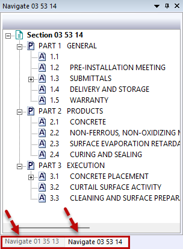

The Arrange Icons command displays the minimized files as tabs at the bottom of the Navigator panel when multiple files are open.
 The Navigator panel provides a way to easily switch your focus between active and inactive files.
The Navigator panel provides a way to easily switch your focus between active and inactive files.

Users are encouraged to visit the SpecsIntact Website's Support & Help Center for access to all of our User Tools, including Web-Based Help (containing Troubleshooting, Frequently Asked Questions (FAQs), Technical Notes, and Known Problems), eLearning Modules (video tutorials), and printable Guides.
| CONTACT US: | ||
| 256.895.5505 | ||
| SpecsIntact@usace.army.mil | ||
| SpecsIntact.wbdg.org | ||